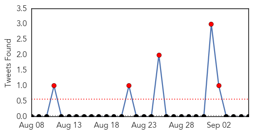
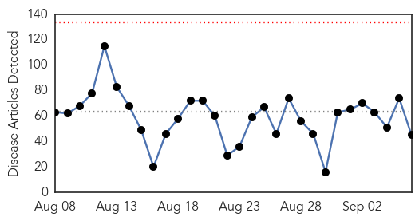
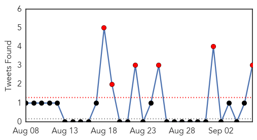
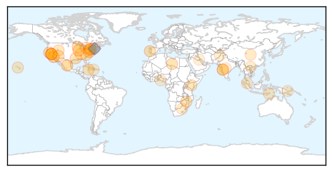
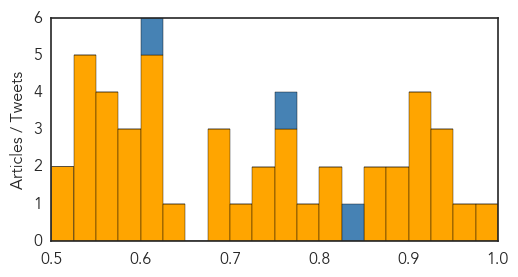

Influenza
30-Day Web Trend
0 alerts, 0 warnings

30-Day Twitter Trend
4 alerts, 0 warnings

Article Locations

Article Confidences
Top Articles:
Top Tweets:
-
No tweets found for Sep 06, 2015
Unknown
30-Day Web Trend
0 alerts, 0 warnings

30-Day Twitter Trend
10 alerts, 4 warnings

Article Locations
Article Confidences
Top Articles:
- 0.989
- Health Officials Very Concerned About Latest Legionnaires’ Disease Nationwide Outbreak
- 0.971
- Deadly Legionnaires' Disease Outbreaks in NYC, Illinois and California
- 0.937
- Legionnaires' Disease Shows Up In Quincy
- 0.932
- Deadly Legionnaires’ disease outbreak in New York City, Illinois and California
- 0.932
- Deadly Legionnaires’ disease outbreak in New York City, Illinois and California
- 0.917
- Chicago Tribune
- 0.917
- Chicago Tribune
- 0.905
- What Diseases Can You Get from a Water Fountain?
- 0.900
- Eighth death from Legionnaires' disease in Quincy
- 0.893
- Cucumbers recalled after salmonella outbreak kills one, sickens hundreds
- 0.890
- Another deadly Salmonella outbreak in California
- 0.875
- State health department assisting with salmonella outbreak
- 0.866
- In rich Gulf Arab states, some feel shamed by refugee response
- 0.807
- Zimbabwe ups malaria fight
- 0.802
- Hundreds miss class as illness sweeps through schools
- 0.781
- Utah, Colorado, Montana Hit by Cucumber Salmonella Outbreak
- 0.773
- Sudden hike of Legionnaires’ disease questions many experts and their theories
- 0.770
- Guidelines For Distribution Of Water Issued To Schools
- 0.759
- 30 Utah residents sickened by salmonella; product recall underway
- 0.745
- Polio Vax with Sterilizing Hormones
- 0.739
- Murfreesboro News and Radio
- 0.708
- Survey results trouble infectious disease experts
- 0.697
- Cucumbers recalled after salmonella outbreak in 27 states
- 0.690
- The Caledonian-Record
- 0.678
- How safe are your antibiotics?
- 0.650
- TB-Diabetes Is A Formidable Challenge In Asia Pacific
- 0.625
- TB-Diabetes is a formidable challenge in Asia Pacific
- 0.616
- Cucumbers recalled in salmonella outbreak;
- 0.611
- Health-e News: Mothers and children are collateral damage in immigration clampdown
- 0.608
- Claim: Climate change increases risk of Legionnaires Disease
- 0.607
- Andrew & Williamson Fresh Produce Company Recalls Cucumber after Salmonella Outbreak Kills One, and Affects 280
- 0.595
- Haïti: L’expert des droits de l’homme en mission pour évaluer les progrès dans la mise en œuvre de ses recommandations
- 0.581
- Cucumbers Recalled in Salmonella Outbreak
- 0.581
- More patients now go abroad for treatment
- 0.570
- TB-Diabetes is a formidable challenge in Asia Pacific
- 0.561
- How Cannibals Might Cure Degenerative Brain Diseases
- 0.560
- Kurigram Sadar Hospital in poor state
- 0.557
- Inmate in San Quentin tested positive with Legionnaire's disease
- 0.546
- Asthma, a life threatening disease
- 0.539
- Person County update: Norovirus confirmed in two samples
- 0.533
- OVER 280 SALMONELLA CASES INCLUDING ONE DEATH LINKED TO CUCUMBERS FROM MEXICO
- 0.532
- Cucumbers Recalled After Link to Salmonella Outbreak in 27 States
- 0.525
- Another Polio Case Reported, This Time in Nimroz
- 0.503
- Health official stymied in quest to test farm pigs for salmonella
- 0.502
- Oman close to banning e-cigarettes, says ministry official
Top Tweets:
- 0.825
- .@Alghamdil In KSA, most cases are transmitted person to person, because MERS cases aren't detected & hospital spread occurs.
- 0.753
- .@Alghamdil US had 2 MERS cases. Why no outbreak? Luck? Several countries have imported 1 or 2 cases without having big outbreaks.
- 0.681
- 7 MERS cases, 3 deaths reported from Riyadh today; 4 are health workers. So late into an outbreak that is dismaying. http://t.co/ZWfNhfPV4g
- 0.615
- RT: KSA MOH reports 7 new MERS cases and 3 deaths in Riyadh today. 4 of the new cases are for health-care workers. http://t…
- 0.561
- KSA MOH reports 7 new MERS cases and 3 deaths in Riyadh today. 4 of the new cases are for health-care workers. http://t.co/mE8ZoW7QEz
- 0.545
- x andar durmiendo me perdi de pasar el dia en el aeropuerto!